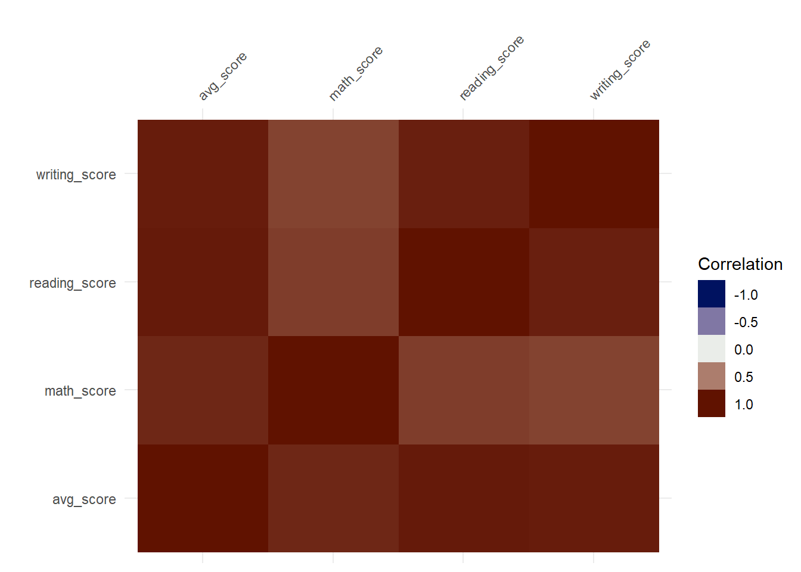
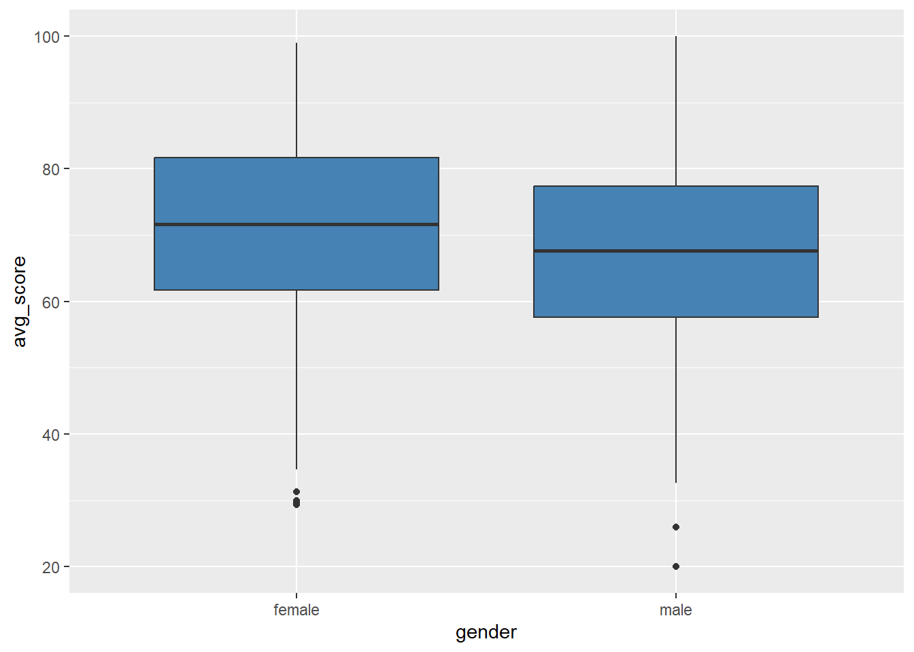
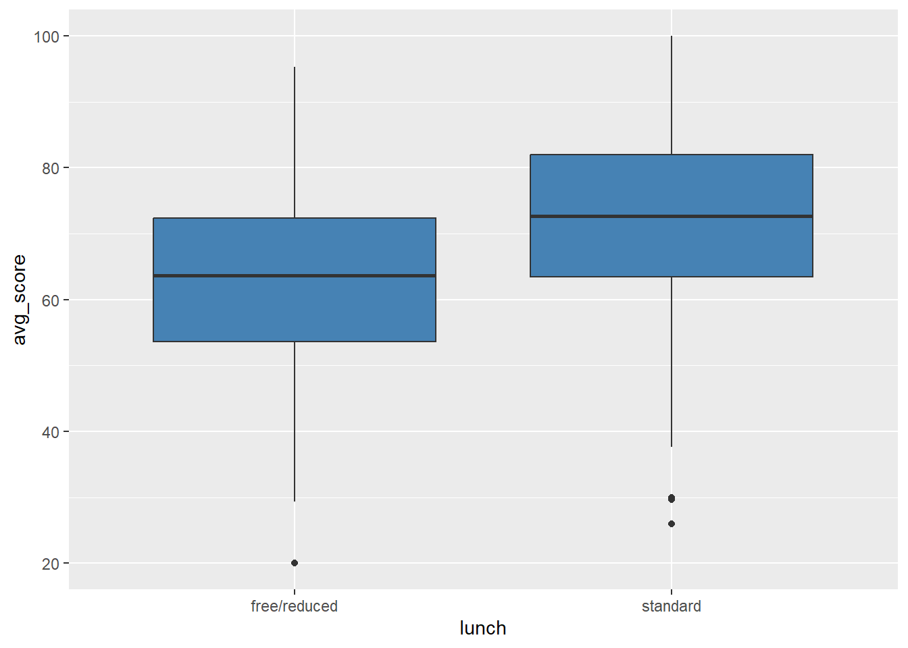

I, Daniel Steck, hereby state that I have not communicated with or gained information in any way from my classmates or anyone other than the Professor during this exam, and that all work is my own.
Introduction
This project was created within the modul “Programming languages for Data Science. Moreover, this project will follow the data science lifecycle, which consists of four main topics:
Plan
Data
Model
Deployment
The main focus within this project will be on the Deployment part.
Data Science Lifecycle
Plan
Identify use case
Frame the problem
Identify variables
Define metrics
Data
Within this chapter the data will be ingested and analyzed. Furthermore the data is also added into a SQL database and will be used for making queries.
SQL data analysis
Before the steps of the data science lifecycle are made, some SQL queries will be made on the data, in order to answer questions from our costumers.
First the DBI library is loaded and afterwards the data is added into the database.
Code
library (DBI)library(tidyverse)
Warning: Paket 'tidyverse' wurde unter R Version 4.2.3 erstellt
Warning: Paket 'ggplot2' wurde unter R Version 4.2.3 erstellt
Warning: Paket 'tibble' wurde unter R Version 4.2.3 erstellt
Warning: Paket 'dplyr' wurde unter R Version 4.2.3 erstellt
── Attaching core tidyverse packages ──────────────────────── tidyverse 2.0.0 ──
✔ dplyr 1.1.1 ✔ readr 2.1.4
✔ forcats 1.0.0 ✔ stringr 1.5.0
✔ ggplot2 3.4.2 ✔ tibble 3.2.1
✔ lubridate 1.9.2 ✔ tidyr 1.3.0
✔ purrr 1.0.1
── Conflicts ────────────────────────────────────────── tidyverse_conflicts() ──
✖ dplyr::filter() masks stats::filter()
✖ dplyr::lag() masks stats::lag()
ℹ Use the conflicted package (<http://conflicted.r-lib.org/>) to force all conflicts to become errors
Code
# Connection to database con <-dbConnect(RSQLite::SQLite(), ":memory:")path_sql <-"https://raw.githubusercontent.com/DanielSteck/Project-Students-grades/main/exams.csv"# Write data "gapminder" into databasedbWriteTable(con, "exams_sql", read_csv(path_sql, show_col_types =FALSE))#show table in databasedbListTables(con)
[1] "exams_sql"
First look on the data
Code
SELECT*FROM exams_sql;
Displaying records 1 - 10
gender
race/ethnicity
parental level of education
lunch
test preparation course
math score
reading score
writing score
female
group D
some college
standard
completed
59
70
78
male
group D
associate’s degree
standard
none
96
93
87
female
group D
some college
free/reduced
none
57
76
77
male
group B
some college
free/reduced
none
70
70
63
female
group D
associate’s degree
standard
none
83
85
86
male
group C
some high school
standard
none
68
57
54
female
group E
associate’s degree
standard
none
82
83
80
female
group B
some high school
standard
none
46
61
58
male
group C
some high school
standard
none
80
75
73
female
group C
bachelor’s degree
standard
completed
57
69
77
The dataset contains 1000 observation with eight variables. Three out of these 8 variables are the students performance on exams.
Show the first 10 observations:
Code
SELECT*FROM exams_sqlLIMIT10;
Displaying records 1 - 10
gender
race/ethnicity
parental level of education
lunch
test preparation course
math score
reading score
writing score
female
group D
some college
standard
completed
59
70
78
male
group D
associate’s degree
standard
none
96
93
87
female
group D
some college
free/reduced
none
57
76
77
male
group B
some college
free/reduced
none
70
70
63
female
group D
associate’s degree
standard
none
83
85
86
male
group C
some high school
standard
none
68
57
54
female
group E
associate’s degree
standard
none
82
83
80
female
group B
some high school
standard
none
46
61
58
male
group C
some high school
standard
none
80
75
73
female
group C
bachelor’s degree
standard
completed
57
69
77
It can be seen that the columns should be renamed as there are e.g. spaces included:
Show all obervations which are parents_education “high_school” and have an average score in exams between 80 and 90. Result shall be ordered descending by avg_exam_score
Lets have a look on the first rows to get an expression of the data
Code
exams %>%slice(1:5)
# A tibble: 5 × 8
gender `race/ethnicity` parental level of educa…¹ lunch test preparation cou…²
<chr> <chr> <chr> <chr> <chr>
1 female group D some college stan… completed
2 male group D associate's degree stan… none
3 female group D some college free… none
4 male group B some college free… none
5 female group D associate's degree stan… none
# ℹ abbreviated names: ¹`parental level of education`,
# ²`test preparation course`
# ℹ 3 more variables: `math score` <dbl>, `reading score` <dbl>,
# `writing score` <dbl>
Before further steps can be made, the columns names need to be corrected, als they are including spaces and special characters. To remove those, the janitor package will be used.
Code
library(janitor)
Attache Paket: 'janitor'
Die folgenden Objekte sind maskiert von 'package:stats':
chisq.test, fisher.test
Code
exams <- exams %>%clean_names()
Beside the cleaning of the names, some variables shall be renamed in order to shorten the length.
The available data consist of 1000. The available features are gender, ethnic_group, parent_education, lunch, test_prep, math_score, reading_score, writing_score.
Missing data
Lets have a look on the description of the data to check the formats.
There are no missing numbers in the dataset. Three variables (scores in the exam) are numeric, the other variables are characters.
Format data
Lets have a look on the character columns and check if they should be formatted as factor.
Code
exams %>%count(gender,sort =TRUE)
# A tibble: 2 × 2
gender n
<chr> <int>
1 male 508
2 female 492
Code
exams %>%count(ethnic_group,sort =TRUE)
# A tibble: 5 × 2
ethnic_group n
<chr> <int>
1 group C 323
2 group D 257
3 group B 198
4 group E 143
5 group A 79
Code
exams %>%count(parent_education,sort =TRUE)
# A tibble: 6 × 2
parent_education n
<chr> <int>
1 some college 224
2 high school 215
3 associate's degree 204
4 some high school 177
5 bachelor's degree 105
6 master's degree 75
Code
exams %>%count(lunch,sort =TRUE)
# A tibble: 2 × 2
lunch n
<chr> <int>
1 standard 660
2 free/reduced 340
Code
exams %>%count(test_prep,sort =TRUE)
# A tibble: 2 × 2
test_prep n
<chr> <int>
1 none 656
2 completed 344
All character variables are having only a small amount of different levels. Therefore all character variables shall be transferred as factor.
Target of this project is to predict the students performance on exams. Therefore an additional column shall be added. This column shall include the average exam score of the students.
As all other variables are not numeric, no further new variables can be created.
Data overview
After succesfully cleaning, formatting and checking the data, lets have an overview of the data with the package skimr:
Code
library(skimr)skim(exams)
Data summary
Name
exams
Number of rows
1000
Number of columns
9
_______________________
Column type frequency:
factor
5
numeric
4
________________________
Group variables
None
Variable type: factor
skim_variable
n_missing
complete_rate
ordered
n_unique
top_counts
gender
0
1
FALSE
2
mal: 508, fem: 492
ethnic_group
0
1
FALSE
5
gro: 323, gro: 257, gro: 198, gro: 143
parent_education
0
1
FALSE
6
som: 224, hig: 215, ass: 204, som: 177
lunch
0
1
FALSE
2
sta: 660, fre: 340
test_prep
0
1
FALSE
2
non: 656, com: 344
Variable type: numeric
skim_variable
n_missing
complete_rate
mean
sd
p0
p25
p50
p75
p100
hist
math_score
0
1
67.81
15.25
15
58.00
68.00
79.25
100
▁▂▇▇▃
reading_score
0
1
70.38
14.11
25
61.00
70.50
80.00
100
▁▃▇▇▃
writing_score
0
1
69.14
15.03
15
59.00
70.00
80.00
100
▁▂▆▇▃
avg_score
0
1
69.11
14.03
20
59.58
69.67
79.33
100
▁▂▇▇▃
beschreiben!
Define features and outcome variable
In advance of the data splitting the definition of the target variable and the feature variables shall be made.
The performance in the exams shall be predicted, for this the average performance is sufficient. As the target is to predict the performance, the variables for math, reading and writing score must not be included into the feature list.
It would be also possible to make a use case which predicts e.g. the performance in math and also includes the students performance in the other exams. In this case only the general performance shall be predicted to see which generic attributes have a influence on students performance. Also exams are most time in a thigh schedule, which means that there wont be a lot of time between exams. Therefore it does not make sense to include also the performance in other exams to predict the performance in e.g. math. Moreover it takes some time until the results are available. So probably the students already had their exam before the receive the first results. Therefore the target in this project is the prediction of an average exam performance without including the performance in the other exams.
Nevertheless in the data exploration these other exam scores will be also included, but they wont go into the model.
Our data is now prepared for the data splitting and for building the pipelines.
Data splitting
Before the data exploration can be started, the data shall be splitted into a training and test set.
To ensure that the training and test set is representative of the various categories of avg_score in the whole dataset, lets have a look on the histogram
Code
exams %>%ggplot(aes(avg_score)) +geom_histogram (bins=6) #tested several, 6 makes most sense
The splitted data shall included equally data from each of the bins.In order the have the same results for each run, a fix seed is set.
Target is to have 80% of the data for training and 20% for testing.
Code
library(rsample)set.seed(50) #for reproducability# split in train and test datadata_split <-initial_split (exams,prop =4/5,strat = avg_score,breaks =6)# Create train dataframetrain_data <-training(data_split)#create test data settest_data <-testing(data_split)
Moreover a validation set shall be created. This shall be used to validate the later models. After best models is used, based on the validation set, the model can be tested with the test data.
Warning: Using an external vector in selections was deprecated in tidyselect 1.1.0.
ℹ Please use `all_of()` or `any_of()` instead.
# Was:
data %>% select(y_label)
# Now:
data %>% select(all_of(y_label))
See <https://tidyselect.r-lib.org/reference/faq-external-vector.html>.
Analyze data
This chapter had the target to understand the training data and to see which variables have an influence on the outcome variable avg_score.
Data exploration set
First step is to create a copy of the training data which will be used for the exploratory data analysis.
Code
df_explo <- train_data
R queries
Code
df_explo %>%summarise(min_score =min(avg_score,na.rm =TRUE) # na dependency not needed as no missing values, but it might be that data changes with an updated dataset ,mean_score =mean(avg_score,na.rm =TRUE),med_score =median(avg_score,na.rm =TRUE),std_score =sd(avg_score,na.rm =TRUE),iqr_score =IQR(avg_score,na.rm =TRUE),q1 =quantile(avg_score, probs =0.25,na.rm =TRUE),q3 =quantile(avg_score, probs =0.75,na.rm =TRUE),max_score =max(avg_score,na.rm =TRUE) )
The worst exam result is 20 while 100 is the best one. Moreover the mean and median values are almost similar and there is only a slight difference. This means that there are no big outliers included here (which is also easy to explain as 100 is the best possible performance). The IQR score of 20 tells us, that the difference between the 75th and 25th percentile is only havgin a difference of 20. So 50% of the data is within a difference of 20.
25% of the students have a exam score of less than 59,3 and 25& of the students are above 79,3. 50% of the students are between 59,3 and 79,3.
Moreover it is interesing how the median, mean and iqr, q1, q3 values are distributed within the categorical variables.
Lets have a look on the gender variable and sort the results descending.
# A tibble: 5 × 6
ethnic_group mean_score med_score iqr_score q1 q3
<fct> <dbl> <dbl> <dbl> <dbl> <dbl>
1 group E 76.2 79 22 65.3 87.3
2 group D 70.3 71 18.7 61 79.7
3 group A 66.2 67.3 16.5 57.5 74
4 group B 66.3 67.3 20.7 55.7 76.3
5 group C 67.2 67.3 17 59.3 76.3
The group E has the best performance in the exams. There is a huge gap compared to group D. Moreover there is almost no difference in mean and median between the other three groups. It might make sense to combine there groups into one group. But lets analyse this first in a visualization, because the IQR score is spreading a lot between these groups. For example the difference in the q1 is much higher than in the mean and median.
Lets have a look on the variable of parents education and sort the results descending.
# A tibble: 6 × 6
parent_education mean_score med_score iqr_score q1 q3
<fct> <dbl> <dbl> <dbl> <dbl> <dbl>
1 associate's degree 71.7 72 19.2 62.8 82
2 master's degree 71.3 71.8 19.5 62.3 81.8
3 some college 69.6 71 20.2 59.1 79.2
4 bachelor's degree 72.1 70.5 19.3 61.7 81
5 high school 67.4 66.8 18.9 59.1 78
6 some high school 65.4 65 18.9 55.4 74.3
It can be seen that a higher parent education is not directly leading to a better exam score. The best students are within the associate's degree which is a lower education than the master's degree and bachelor's degree.
Based on the given levels, this would be the ascending order of parent_eduaction (based on these links:
There is a huge difference between the students performance which have a standard meal and the ones which have a free/reduced meal. Probably the students who are getting a free/reducred meal are from a porer family which might have less time to spend with their kids or maybe the kids education is not the highest priority. As the family might have finicial issues it could be also possible that the students need to work in order to have enough money for the family. Therefore it might be that their study time is needed for working and this might lead to worse results.
Lets have a look on the test preparation variable and sort the results descending.
Students who made a test preparation course have much better results than students who didnt. But the difference is much smaller than in the lunch variable.
Visualizations
In this chapter plots are created in order to learn from the data and find correlations between the variables.
In order to select the correct visualizations the visualizations are based on From Data to Viz
First of all lets start with the plot of the target variable. How is it distributed in the value range?
Code
library (ggplot2)ggplot(data = df_explo, mapping =aes(x = avg_score)) +geom_density(fill="lightblue") +labs(title ="Students performance in exams", subtitle="Average performance of math, writing and reading exam",x ="Average score",y ="Density") +theme_minimal()+theme (text =element_text(size=8),legend.key.size =unit(5, "mm"))
The results are quite similar compared to what was learned in the R queries. Highest density of the average_score is at the median score. There are only a small amount of scores which are below 40.
Now lets have a look on our features. For this use case we only got categorical features in our data set. Therefore lets have a look on their levels und the uniqueness.
Code
for (i in features){ p <-ggplot(df_explo, aes_string(x=i)) +geom_bar(fill="lightblue")+labs(title ="Students average performance in exams", y="count") +theme_minimal()+theme (text =element_text(size=8),legend.key.size =unit(5, "mm"))plot(p) }
Warning: `aes_string()` was deprecated in ggplot2 3.0.0.
ℹ Please use tidy evaluation idioms with `aes()`.
ℹ See also `vignette("ggplot2-in-packages")` for more information.
It can be seen that there the variable gender is equally distributed on male and female.
The ethnic group has the most occurrences within group C, while group A and group E have a smaller occur ency. Especially group A has only about 50 occurrences.
Regarding the parents education- this feature has six levels which are not equally distributed. Four levels has a almost similar occurrence, while the level Bachelors and Masters degree have the lowest occurrences.
The lunch type has two levels which are not equally distributed, about 66% occurrences are the standard lunch types, while 33% are the free/reduced type of lunch. This is actually quite a high number of reduced/free lunch meals.
The amount of students who performaed a test preparation course is about 35% while 65% of students did not make any test prepration.
Lets have a look on the impact of these features and their levels on the target variable average score
For this project the visualizations of categorical and the target variable will be made with box plots, density plots, violin plots and histograms in order to show the different possibilities in R. Therefore the variables will be displayed in different graphical visualizations. In general box plots would be a very good way to visualize these results, but for demonstration purposes different visualizations are made.
Impact Gender on Avg_score
Code
ggplot(data = df_explo, mapping =aes(x = avg_score, fill=gender)) +geom_histogram(bins=20) +labs(title ="Students average performance in exams", subtitle="By gender",x ="Average score in exams",y ="count") +theme_minimal()+theme (text =element_text(size=8),legend.key.size =unit(5, "mm"))
Actually in this plot it is not that easy to see the differences between those two genders. So therefore lets try it with a facet wrap.
Code
ggplot(data = df_explo, mapping =aes(x = avg_score, fill=gender)) +geom_histogram(bins=20) +facet_wrap(~gender, ncol=1)+labs(title ="Students average performance in exams", subtitle="By gender",x ="Average score in exams",y ="count") +theme_minimal()+theme (text =element_text(size=8),legend.key.size =unit(5, "mm"))
Now it can be seen that female are performing much better than the males. There are a lot of test results above 80, while the males have a peak at above 75. But it is interesting that the are much more males who achieve 100 points in the exam compared to the women.
Impact ethnic_group on Avg_score
The different ethnic groups and their impact on the avg_score shall be displayed within a boxplot.
Actually the results from the r queries can be confirmed. Best results are in group E and the groups A, B and C have almost the same values. Even though there are some outliers in group C. The mean for these three groups is almost the same, but it can be seen that group B has different whiskers, here the IQR range is spreaded the most.
Impact parent_education on Avg_score
This variable in their influence on the average score shall be visualized in a violin plot.
Quite similar results as in the R queries. It can be seen that the associates degree as parent education leads to the best median score. But it can be seen that there are also a lot of students in this group which have results of less than 40. Only in two other groups the results are worse. In five out of six parent degrees the most students are concentrated nearby the median score. But the high_school degree has a peak of at the average score of 63 and as well another, smaller peak at the peak of 80. Moreover on this group there are the students with the worst results. Furthermore the group of some college and bachelors degree have a very similar violin plot and there are only minor differences between those two groups.
Impact lunch on Avg_score
The impact of the lunch type shall be displayed within a density plot. Moreover, this plot shall be extended by the Impact test preparation course on Avg_score.
Code
ggplot(df_explo, mapping =aes (x=avg_score, fill=lunch)) +geom_density(alpha=0.7) +scale_fill_manual("Lunch", values =c("#339999", "#FFFF66"))+facet_wrap(~test_prep, ncol=1)+labs(title ="Students average performance in exams", subtitle="By type of lunch and if a test preperation course was made",x ="Average score in exams",y ="density") +theme_minimal()+theme (text =element_text(size=8),legend.key.size =unit(5, "mm"))
It can be clearly seen that the students who completed the test preparation course have a much better performance than those who did not. Also the students who have a standard meal are performing better than those who are having only a free or reduced meal. If both features are combined it can be clearly seen that students who made the test preparation course AND have a standard meal are performing much better than those students who did not make a test preparation course and who only get a free/reduced meal. These two features have a big impact on the target variable.
Visualizations (incl. perform results)
This chapter is used to show the possibilities of data visualizations if we could use numeric variables. Therefore plots correlations will be made with those variables - even though they must not be included into the later models.
In order to select the correct visualizations the visualizations are based on From Data to Viz
Lets start with the students performance in math compared to their performance in the average exam score.
Code
ggplot(df_explo, aes(math_score, avg_score))+geom_point(color="lightblue")+labs(title ="Students average performance in exams", subtitle="Average performance and math performance",x ="Average score in maths",y ="Average score in exams") +theme_minimal()+theme (text =element_text(size=8),legend.key.size =unit(5, "mm"))
It can be clearly seen that there is a linear relationship between the math performance and the average performance (which makes sense as the average performance is based on the math performance, but this is made for demonstration purposes). The correlation between those variables is very strong.
Lets add two further variables to this plot. Lets add the type of lunch and the test preparation as well.Moreover it shall be wrapped by the ethnic group.
Code
ggplot(df_explo, aes(math_score, avg_score, color=lunch, shape=test_prep))+geom_point()+facet_wrap(~ethnic_group)+labs(title ="Students average performance in exams", subtitle="By lunch type, ethnic_group and if test preparation was made",x ="Average score in maths",y ="Average score in exams") +theme_minimal()+theme (text =element_text(size=8),legend.key.size =unit(5, "mm"))
It can be seen that the performance in group E and D is the best, as well as that students with standard lunch and test preparation course are performing better.
Now lets have a look on the correlations between our three exam scores and the average exam score.
Code
df_explo %>%select(where(is.numeric)) %>%# only select numerical datavis_cor(cor_method ="spearman", na_action ="pairwise.complete.obs")

It can be seen that all variables have a huge correlation with each other. Students which are performing good in one exam are likely to perform goog in all exams. But it can be also seen that the correlation between writing and reading is much higher than the correlation to math and the other exams.
Lets have a look on the numbers:
Code
library(corrr)
Warning: Paket 'corrr' wurde unter R Version 4.2.3 erstellt
Attache Paket: 'corrr'
Das folgende Objekt ist maskiert 'package:skimr':
focus
Code
cor_res <- df_explo %>%select(where(is.numeric)) %>%correlate(method ="spearman", use ="pairwise.complete.obs")
Math score has the lowest impact on the average score, while writing and reading scores have the highest. As learned in the correlation matrix before: Writing and Reading are correlating with each other. Therefore this result was expectable.
Now lets analyze the numeric variables in more detail. Moreover the categorical variable “lunch” shall be added as well.
Code
library(GGally)
Registered S3 method overwritten by 'GGally':
method from
+.gg ggplot2
Warning in ggscatmat(., color = "lunch", corMethod = "spearman", alpha = 0.4):
Factor variables are omitted in plot
Warning: The dot-dot notation (`..scaled..`) was deprecated in ggplot2 3.4.0.
ℹ Please use `after_stat(scaled)` instead.
ℹ The deprecated feature was likely used in the GGally package.
Please report the issue at <https://github.com/ggobi/ggally/issues>.
As the numeric variables are already so good in predicting the avg_score, the impact of the lunch type is no longer seen. In the analysis before it was clearly seen that this variable has a big impact on the avg_score.
Define schema
The main parts of defining the schema were already performed within the Data Ingestion chapter.Nevertheless some of the check functions of tidyverse will be applied here.
Within this chapter the data is checked for outliers and missing data. This is done in the original dataframe. This is done so that it can be learned which steps need to be made in the pipeline definitions. No changes are made with the data, it is only checked how to deal with detected issues.
Missing values
This was already performed in the Data Ingestion chapter, nevertheless it is performed again in this chapter.
There are no missing data/rows in the available data.
Outlier and novelty detection
Lets check our data for outliers - as it was already made during the Data analysis. For the categorical data there are no outliers included, as they are only spread through a limited set of levels. Moreover there is no level included which is underrepresented. Therefore the check for outliers is only made in the target variable.
Lets create a plot of the target variable in box plots with all categorical data.
Code
for (i in features){ p <-ggplot(df_explo, aes_string(x=i, y=y_label)) +geom_boxplot(fill="steelblue")plot(p) }


It can be seen that there are certain outliers included in the available data. These outliers are certain students who performed very bad in the exams. The training data contains outliers, these are defined as observations which are far from the others. Outlier detection estimators thus try to fit the regions where the training data is the most concentrated, ignoring the deviant observations.
These outliers make it hard for the later model to predict the result correctly. The learning from this chapter shall be included in the later model creation.
Feature engineering
All topics which were learned/discovered within the earlier steps shall be used now for the data preprocessing and feature engineering. This will be made with data pipelines. Those are generated with the tidymodels package recipes and workflows. The feature selection part wont be included here, as the features are selected within the modeling part.
Feature transformation
Target of feature transformations - for this project and maybe new data in the future is to get red id:
missing values
outliers
one hot encoding of categorical variables
Other datasets would need further steps which do not apply in this project due to the data structure. Those other steps would be:
get data on the same scale
standardize the data
handle skewed distribution of data
take care if the data might be censored at certain limits (e.g. at the low and or high of the data)
Missing values: As we do not have any missing data in the data set, this step could be skipped. But in case that there might be newer data in the future which could have missing data, this should be added to the pipeline. There are three ways to handle missing data: Delete the observation with missing data, remove the whole attribute or impute it with some other values, e.g. the mean, median, etc. For this project missing data shall be dropped within the pipeline.
Outliers: Some outliers are included in the data set. For handling those the target is to test the experimental 3-rd party package from tidy_outlier
One-Hot_encoding: Our available categorical data needs to be converted to numbers as alorithms prefer to work with numbers. For this the tidy models step_dummy function will be used.
Feature extraction
Some features might include relevant information which could be redundant. That would be there wont be any benefit in adding both features in the model, if the target variable can be determined with one of those.
Therefore it makes sense to remove features which have large correlations with each other. But this is more likely at numeric features. In the feature extraction this can be made by using the ratio of two two predictors or with more complex methods like principal component analysis.
This also makes sense to use in case that the number of features is high.
For this usecase this is only partly applicable, as there are only categorical features available.
Final data pipeline
In the following pipeline all steps for the feature engineering are included:
Das folgende Objekt ist maskiert 'package:stringr':
fixed
Das folgende Objekt ist maskiert 'package:stats':
step
Code
exam_rec <-recipe(avg_score ~+gender + ethnic_group + parent_education + lunch + test_prep, data = train_data) %>%#definition of features and target variablestep_naomit(everything(), skip =TRUE) %>%#remove missing observationsstep_dummy(all_nominal()) %>%#converts factors into numeric binary (0 and 1) variablesstep_outliers_maha(all_numeric(), -all_outcomes()) %>%step_outliers_lookout(all_numeric(),-contains(r"(.outliers)"),-all_outcomes()) %>%step_outliers_remove(contains(r"(.outliers)")) %>%step_corr(all_predictors(), threshold =0.7, method ="spearman") # remove correlated features (maybe not necessary as only character features as input)
Lets have on the current set of variables and roles:
Code
summary(exam_rec)
# A tibble: 6 × 4
variable type role source
<chr> <list> <chr> <chr>
1 gender <chr [3]> predictor original
2 ethnic_group <chr [3]> predictor original
3 parent_education <chr [3]> predictor original
4 lunch <chr [3]> predictor original
5 test_prep <chr [3]> predictor original
6 avg_score <chr [2]> outcome original
Lets check if all preprocessing steps worked as intended:
Code
prepped_data <- exam_rec %>%# use the recipe objectprep() %>%# perform the recipe on training datajuice() # extract only the preprocessed dataframe glimpse(prepped_data)
The recipe was successful! The character columns were successfully changed to dummy variables, so that the models can work with them. Moreover three observations were removed as they were identified as outliers.
Model
After the data and features have been preprocessed in a format which is ready for the modeling algorithms, they can be used in the model selection process.
Target for the Model and Deployment phase is to perform all steps in the usual way with tidymodels and afterwards one time by using MLFfow.
Select algorithm
The target is to predict the avg_score of students in exams. This outcome variable is numeric. Therefore a Regression model needs to be selected for this usecase. The following page is used to select three different model types and their engines: Tidymodels: Search parsnip models
The following three models were selected:
Boosted Tree (XGBoost)
Linear Regression (Keras)
Single layer neural network (Keras)
Model Specification
Regarding the model specification three steps need to be made:
Pick a model type (see above)
Set the engine (see above)
Set the mode regression (as the target is to perform a regression)
The further chapters are based on the documentation of the following pages:
# A tibble: 2 × 6
.metric .estimator mean n std_err .config
<chr> <chr> <dbl> <int> <dbl> <chr>
1 rmse standard 13.0 5 0.225 Preprocessor1_Model1
2 rsq standard 0.176 5 0.0149 Preprocessor1_Model1
How are these metrics spreading through the cross_validation:
Code
xgb_res_1 %>%collect_metrics(summarize =FALSE)
# A tibble: 10 × 5
id .metric .estimator .estimate .config
<chr> <chr> <chr> <dbl> <chr>
1 Fold1 rmse standard 12.3 Preprocessor1_Model1
2 Fold1 rsq standard 0.220 Preprocessor1_Model1
3 Fold2 rmse standard 12.8 Preprocessor1_Model1
4 Fold2 rsq standard 0.178 Preprocessor1_Model1
5 Fold3 rmse standard 13.3 Preprocessor1_Model1
6 Fold3 rsq standard 0.183 Preprocessor1_Model1
7 Fold4 rmse standard 13.6 Preprocessor1_Model1
8 Fold4 rsq standard 0.127 Preprocessor1_Model1
9 Fold5 rmse standard 13.0 Preprocessor1_Model1
10 Fold5 rsq standard 0.170 Preprocessor1_Model1
There are some smaller differences between these folds, but overall those differences are not to big.
Lets visualize these metrics into a plot. For this the predictions are plotted on the y-axis and the actual values on the x-axis. If a perfect model would have been created, all points would be on the diagonal line
Code
assess_xgb_res_1 <-collect_predictions(xgb_res_1)assess_xgb_res_1 %>%ggplot(aes(x = avg_score, y = .pred)) +geom_point(alpha = .15) +geom_abline(col ="blue") +coord_obs_pred() +ylab("Predicted") +xlab("Actual Average Exam Score")
If we consider that this is the first created model and that there are only cetagorical features in the dataset, this result not that bad. Lets see in the next chapter how the Boosted Tree Performance can be increased.
Model Tuning
Final Fit Model
Deployment
Validate model
Deploy model
Serve model
Monitor model
Source Code
---title: "Project_student_grades"subtitle: "Programming languages for Data Science"author: "Daniel Steck"date: "04.07.2023"format: html: code-fold: true code-tools: trueoutput: html_document: toc: true toc_depth: 3 number_sections: true---# Academic Honesty StatementI, Daniel Steck, hereby state that I have not communicated with or gained information in any way from my classmates or anyone other than the Professor during this exam, and that all work is my own.# IntroductionThis project was created within the modul "Programming languages for Data Science. Moreover, this project will follow the data science lifecycle, which consists of four main topics:- Plan- Data- Model- DeploymentThe main focus within this project will be on the **Deployment** part.# Plan## Identify use case## Frame the problem## Identify variables## Define metrics# DataWithin this chapter the data will be ingested and analyzed. Furthermore the data is also added into a SQL database and will be used for making queries.## SQL data analysisBefore the steps of the data science lifecycle are made, some SQL queries will be made on the data, in order to answer questions from our costumers.First the DBI library is loaded and afterwards the data is added into the database.```{r import_SQL_librarys}library (DBI)library(tidyverse)``````{r database_connection}# Connection to database con <-dbConnect(RSQLite::SQLite(), ":memory:")path_sql <-"https://raw.githubusercontent.com/DanielSteck/Project-Students-grades/main/exams.csv"# Write data "gapminder" into databasedbWriteTable(con, "exams_sql", read_csv(path_sql, show_col_types =FALSE))#show table in databasedbListTables(con)```### First look on the data```{sql connection=con}SELECT*FROM exams_sql;```The dataset contains 1000 observation with eight variables. Three out of these 8 variables are the students performance on exams.Show the first 10 observations:```{sql connection=con}SELECT*FROM exams_sqlLIMIT10;```It can be seen that the columns should be renamed as there are e.g. spaces included:```{sql connection=con}ALTERTABLE exams_sqlRENAMECOLUMN"race/ethnicity"TO ethnicity``````{sql connection=con}ALTERTABLE exams_sqlRENAMECOLUMN"parental level of education"TO parent_education``````{sql connection=con}ALTERTABLE exams_sqlRENAMECOLUMN"test preparation course"TO prep_course``````{sql connection=con}ALTERTABLE exams_sqlRENAMECOLUMN"math score"TO math_score``````{sql connection=con}ALTERTABLE exams_sqlRENAMECOLUMN"reading score"TO reading_score``````{sql connection=con}ALTERTABLE exams_sqlRENAMECOLUMN"writing score"TO writing_score;```Check the renamed columns```{sql connection=con}SELECT*FROM exams_sql```Lets have a look on the gender and their performance in math.```{sql connection=con}SELECT gender, "math_score"FROM exams_sql;```### Data ExplorationHow many different genders are in the dataset?```{sql connection=con}SELECTDISTINCT genderFROM exams_sql;```How many different ethnicities are in the dataset?```{sql connection=con}SELECTDISTINCT ethnicityFROM exams_sql;```How many different forms of parent_education are in the dataset?```{sql connection=con}SELECTDISTINCT parent_educationFROM exams_sql;```How many different lunch types are in the dataset?```{sql connection=con}SELECTDISTINCT lunchFROM exams_sql;```How many different types of preparation courses are in the dataset?```{sql connection=con}SELECTDISTINCT prep_courseFROM exams_sql;```How many observations are in the data set?```{sql connection=con}SELECTCOUNT(*) as rowsFROM exams_sql;```How many observations are available for each parent_education```{sql connection=con}SELECT parent_education,COUNT(parent_education) AS amount_of_observationsFROM exams_sqlGROUPBY parent_educationORDERBY amount_of_observations DESC;```How many students have a math score above 80?```{sql connection=con}SELECTCOUNT(*) as students_above_math_80FROM exams_sqlWHERE math_score >80;```Have a look at the obervations of students with more than 90 in reading score```{sql connection=con}SELECT*FROM exams_sqlWHERE reading_score >90;```Check the obervations of all females with more than 90 in writing score. The result shall be ordered by writing score (decreasing)```{sql connection=con}SELECT*FROM exams_sqlWHERE gender ="female"AND writing_score>90ORDERBY writing_score DESC;```Check all observations of students with more than 90% in one of the exams and made NO prep_course```{sql connection=con}SELECT*FROM exams_sqlWHERE prep_course ="none"AND (math_score>90OR writing_score>90OR reading_score>90);```What are the average exam scores of the different ethnicies?```{sql connection=con}SELECT ethnicity,AVG(math_score) as avg_math,AVG(reading_score) as avg_read,AVG(writing_score) as avg_writeFROM exams_sqlGROUPBY ethnicity;```What are the best exam scores?```{sql connection=con}SELECTMAX(math_score) as max_math,MAX(reading_score) as max_read,MAX(writing_score) as max_writeFROM exams_sql;```What are the worst exam scores?```{sql connection=con}SELECTMIN(math_score) as min_math,MIN(reading_score) as min_read,MIN(writing_score) as min_writeFROM exams_sql;```What are the average exam scores for the genders?```{sql connection=con}SELECT gender, (AVG(math_score) +AVG(reading_score) +AVG(writing_score)) /3as avg_exams_scoreFROM exams_sqlGROUPBY gender;```Show all obervations which are parents_education "high_school" and have an average score in exams between 80 and 90. Result shall be ordered descending by avg_exam_score```{sql connection=con}SELECT gender, ethnicity, parent_education, lunch, prep_course, (math_score + reading_score + writing_score) /3as avg_exams_scoreFROM exams_sqlWHERE parent_education ="high school"AND avg_exams_score BETWEEN80AND90;```Show all male ethnicities which have an average_exams score less than 70. Order the avg_exams_score ascending.```{sql connection=con}SELECT ethnicity, (AVG(math_score) +AVG(reading_score) +AVG(writing_score)) /3as avg_exams_scoreFROM exams_sqlWHERE gender="male"GROUPBY ethnicityHAVING avg_exams_score <70ORDERBY avg_exams_score;```## Data ingestion### Data ImportFirst of all the data will be imported```{r read_csv}library(tidyverse)path <-"https://raw.githubusercontent.com/DanielSteck/Project-Students-grades/main/exams.csv"exams <-read_csv(path, show_col_types =FALSE)```### Clean DataLets have a look on the first rows to get an expression of the data```{r first_rows}exams %>%slice(1:5)```Before further steps can be made, the columns names need to be corrected, als they are including spaces and special characters. To remove those, the janitor package will be used.```{r janitor}library(janitor)exams <- exams %>%clean_names()```Beside the cleaning of the names, some variables shall be renamed in order to shorten the length.```{r rename_columns}exams <-rename(exams, ethnic_group = race_ethnicity)exams <-rename(exams, parent_education = parental_level_of_education)exams <-rename(exams, test_prep = test_preparation_course)```The available data consist of `r nrow(exams)`. The available features are `r names(exams)`.### Missing dataLets have a look on the description of the data to check the formats.```{r glimpse}glimpse (exams)```Are there any missing data? lets check it:```{r missing_values_graphic}library(visdat)vis_dat(exams)```Alternative method for missing data:```{r missing_values_num}is.na(exams) %>%colSums()```There are no missing numbers in the dataset. Three variables (scores in the exam) are numeric, the other variables are characters.### Format dataLets have a look on the character columns and check if they should be formatted as factor.```{r levels_gender}exams %>%count(gender,sort =TRUE)``````{r levels_ethnic_group}exams %>%count(ethnic_group,sort =TRUE)``````{r levels_parent_education}exams %>%count(parent_education,sort =TRUE)``````{r levels_lunch}exams %>%count(lunch,sort =TRUE)``````{r levels_test_prep}exams %>%count(test_prep,sort =TRUE)```All character variables are having only a small amount of different levels. Therefore all character variables shall be transferred as factor.```{r char_to_factor}exams <- exams %>%mutate(across(where(is.character), as.factor))```### Create new variablesTarget of this project is to predict the students performance on exams. Therefore an additional column shall be added. This column shall include the average exam score of the students.```{r new_column_avg_score}exams <- exams%>%mutate (avg_score = (math_score + reading_score + writing_score)/3)```As all other variables are not numeric, no further new variables can be created.### Data overviewAfter succesfully cleaning, formatting and checking the data, lets have an overview of the data with the package *skimr*:```{r skimr}library(skimr)skim(exams)```**beschreiben!**### Define features and outcome variableIn advance of the data splitting the definition of the target variable and the feature variables shall be made.The performance in the exams shall be predicted, for this the average performance is sufficient. As the target is to predict the performance, the variables for math, reading and writing score must not be included into the feature list.It would be also possible to make a use case which predicts e.g. the performance in math and also includes the students performance in the other exams. In this case only the general performance shall be predicted to see which generic attributes have a influence on students performance. Also exams are most time in a thigh schedule, which means that there wont be a lot of time between exams. Therefore it does not make sense to include also the performance in other exams to predict the performance in e.g. math. Moreover it takes some time until the results are available. So probably the students already had their exam before the receive the first results. Therefore the target in this project is the prediction of an average exam performance without including the performance in the other exams.Nevertheless in the data exploration these other exam scores will be also included, but they wont go into the model.```{r outcome_and_features}y_label <-'avg_score'features <-c('gender', 'ethnic_group', 'parent_education', 'lunch', 'test_prep')X <- exams %>%select(all_of(features))y <- exams %>%select(all_of(y_label))```Our data is now prepared for the data splitting and for building the pipelines.## Data splittingBefore the data exploration can be started, the data shall be splitted into a training and test set.To ensure that the training and test set is representative of the various categories of `avg_score` in the whole dataset, lets have a look on the histogram```{r bins_target_variable}exams %>%ggplot(aes(avg_score)) +geom_histogram (bins=6) #tested several, 6 makes most sense ```The splitted data shall included equally data from each of the bins.In order the have the same results for each run, a fix seed is set.Target is to have 80% of the data for training and 20% for testing.```{r train_test_split}library(rsample)set.seed(50) #for reproducability# split in train and test datadata_split <-initial_split (exams,prop =4/5,strat = avg_score,breaks =6)# Create train dataframetrain_data <-training(data_split)#create test data settest_data <-testing(data_split)```Moreover a validation set shall be created. This shall be used to validate the later models. After best models is used, based on the validation set, the model can be tested with the test data.```{r validation_set}set.seed(12)cv_folds <-vfold_cv(train_data,v=5,strata = y_label,breaks =6)```## Analyze dataThis chapter had the target to understand the training data and to see which variables have an influence on the outcome variable **avg_score**.### Data exploration setFirst step is to create a copy of the training data which will be used for the exploratory data analysis.```{r exploration_dataframe}df_explo <- train_data```### R queries```{r avg_score_statistics}df_explo %>%summarise(min_score =min(avg_score,na.rm =TRUE) # na dependency not needed as no missing values, but it might be that data changes with an updated dataset ,mean_score =mean(avg_score,na.rm =TRUE),med_score =median(avg_score,na.rm =TRUE),std_score =sd(avg_score,na.rm =TRUE),iqr_score =IQR(avg_score,na.rm =TRUE),q1 =quantile(avg_score, probs =0.25,na.rm =TRUE),q3 =quantile(avg_score, probs =0.75,na.rm =TRUE),max_score =max(avg_score,na.rm =TRUE) )```The worst exam result is `20` while `100` is the best one. Moreover the mean and median values are almost similar and there is only a slight difference. This means that there are no big outliers included here (which is also easy to explain as 100 is the best possible performance). The IQR score of 20 tells us, that the difference between the 75th and 25th percentile is only havgin a difference of 20. So 50% of the data is within a difference of 20.25% of the students have a exam score of less than 59,3 and 25& of the students are above 79,3. 50% of the students are between 59,3 and 79,3.Moreover it is interesing how the median, mean and iqr, q1, q3 values are distributed within the categorical variables.Lets have a look on the gender variable and sort the results descending.```{r avg_score_gender}df_explo %>%group_by(gender) %>%summarise(mean_score =mean(avg_score,na.rm =TRUE),med_score =median(avg_score,na.rm =TRUE),iqr_score =IQR(avg_score,na.rm =TRUE),q1 =quantile(avg_score, probs =0.25,na.rm =TRUE),q3 =quantile(avg_score, probs =0.75,na.rm =TRUE)) %>%arrange(desc(med_score))```The performance of female students is better than the performance of male students.Lets have a look on the ethic_group variable and sort the results descending.```{r avg_score_ethic_group}df_explo %>%group_by(ethnic_group) %>%summarise(mean_score =mean(avg_score,na.rm =TRUE),med_score =median(avg_score,na.rm =TRUE),iqr_score =IQR(avg_score,na.rm =TRUE),q1 =quantile(avg_score, probs =0.25,na.rm =TRUE),q3 =quantile(avg_score, probs =0.75,na.rm =TRUE), ) %>%arrange(desc(med_score))```The `group E` has the best performance in the exams. There is a huge gap compared to `group D`. Moreover there is almost no difference in mean and median between the other three groups. It might make sense to combine there groups into one group. But lets analyse this first in a visualization, because the IQR score is spreading a lot between these groups. For example the difference in the q1 is much higher than in the mean and median.Lets have a look on the variable of parents education and sort the results descending.```{r avg_score_parent_education}df_explo %>%group_by(parent_education) %>%summarise(mean_score =mean(avg_score,na.rm =TRUE),med_score =median(avg_score,na.rm =TRUE),iqr_score =IQR(avg_score,na.rm =TRUE),q1 =quantile(avg_score, probs =0.25,na.rm =TRUE),q3 =quantile(avg_score, probs =0.75,na.rm =TRUE), ) %>%arrange(desc(med_score))```It can be seen that a higher parent education is not directly leading to a better exam score. The best students are within the `associate's degree` which is a lower education than the `master's degree` and `bachelor's degree`.Based on the given levels, this would be the ascending order of parent_eduaction (based on these links:- [Associates, Bachelors and Masters](https://thebestschools.org/degrees/college-degree-levels/#:~:text=A%20doctorate%20is%20the%20highest,research%20requirements%2C%20and%20a%20dissertation.)- [High School and College](https://usahello.org/education/children/grade-levels/#gref)- [College vs Associates degree](http://www.differencebetween.net/miscellaneous/difference-between-diploma-and-associate-degree/#:~:text=A%20student%20may%20take%20one,stone%20to%20a%20higher%20education.))List of education level in a ascending order:1. Some High School/High School --\> I did not find any results for this in a research. Probably High School might be a bit better than some High school2. Some College3. Associates degree4. Bachelor degree5. Masters degreeThis order of parental education is not represented in the performance of students performance.The worst exam results are for the parental education of some High School and High School.Lets have a look on the lunch variable and sort the results descending.```{r avg_score_lunch}df_explo %>%group_by(lunch) %>%summarise(mean_score =mean(avg_score,na.rm =TRUE),med_score =median(avg_score,na.rm =TRUE),iqr_score =IQR(avg_score,na.rm =TRUE),q1 =quantile(avg_score, probs =0.25,na.rm =TRUE),q3 =quantile(avg_score, probs =0.75,na.rm =TRUE), ) %>%arrange(desc(med_score))```There is a huge difference between the students performance which have a standard meal and the ones which have a free/reduced meal. Probably the students who are getting a free/reducred meal are from a porer family which might have less time to spend with their kids or maybe the kids education is not the highest priority. As the family might have finicial issues it could be also possible that the students need to work in order to have enough money for the family. Therefore it might be that their study time is needed for working and this might lead to worse results.Lets have a look on the test preparation variable and sort the results descending.```{r avg_score_test_prep}df_explo %>%group_by(test_prep) %>%summarise(mean_score =mean(avg_score,na.rm =TRUE),med_score =median(avg_score,na.rm =TRUE),iqr_score =IQR(avg_score,na.rm =TRUE),q1 =quantile(avg_score, probs =0.25,na.rm =TRUE),q3 =quantile(avg_score, probs =0.75,na.rm =TRUE), ) %>%arrange(desc(med_score))```Students who made a test preparation course have much better results than students who didnt. But the difference is much smaller than in the lunch variable.### VisualizationsIn this chapter plots are created in order to learn from the data and find correlations between the variables.In order to select the correct visualizations the visualizations are based on [From Data to Viz](https://www.data-to-viz.com)First of all lets start with the plot of the target variable. How is it distributed in the value range?```{r dense_plot_avg_score}library (ggplot2)ggplot(data = df_explo, mapping =aes(x = avg_score)) +geom_density(fill="lightblue") +labs(title ="Students performance in exams", subtitle="Average performance of math, writing and reading exam",x ="Average score",y ="Density") +theme_minimal()+theme (text =element_text(size=8),legend.key.size =unit(5, "mm"))```The results are quite similar compared to what was learned in the R queries. Highest density of the average_score is at the median score. There are only a small amount of scores which are below 40.Now lets have a look on our features. For this use case we only got categorical features in our data set. Therefore lets have a look on their levels und the uniqueness.```{r cat_features_bar_plot}for (i in features){ p <-ggplot(df_explo, aes_string(x=i)) +geom_bar(fill="lightblue")+labs(title ="Students average performance in exams", y="count") +theme_minimal()+theme (text =element_text(size=8),legend.key.size =unit(5, "mm"))plot(p) }```It can be seen that there the variable **gender** is equally distributed on male and female.The **ethnic group** has the most occurrences within group C, while group A and group E have a smaller occur ency. Especially group A has only about 50 occurrences.Regarding the **parents education**- this feature has six levels which are not equally distributed. Four levels has a almost similar occurrence, while the level Bachelors and Masters degree have the lowest occurrences.The **lunch** type has two levels which are not equally distributed, about 66% occurrences are the standard lunch types, while 33% are the free/reduced type of lunch. This is actually quite a high number of reduced/free lunch meals.The amount of students who performaed a **test preparation** course is about 35% while 65% of students did not make any test prepration.Lets have a look on the impact of these features and their levels on the target variable **average score**For this project the visualizations of categorical and the target variable will be made with box plots, density plots, violin plots and histograms in order to show the different possibilities in R. Therefore the variables will be displayed in different graphical visualizations. In general box plots would be a very good way to visualize these results, but for demonstration purposes different visualizations are made.**Impact Gender on Avg_score**```{r avg_score_gender_histogram}ggplot(data = df_explo, mapping =aes(x = avg_score, fill=gender)) +geom_histogram(bins=20) +labs(title ="Students average performance in exams", subtitle="By gender",x ="Average score in exams",y ="count") +theme_minimal()+theme (text =element_text(size=8),legend.key.size =unit(5, "mm"))```Actually in this plot it is not that easy to see the differences between those two genders. So therefore lets try it with a facet wrap.```{r avg_score_gender_histogram2}ggplot(data = df_explo, mapping =aes(x = avg_score, fill=gender)) +geom_histogram(bins=20) +facet_wrap(~gender, ncol=1)+labs(title ="Students average performance in exams", subtitle="By gender",x ="Average score in exams",y ="count") +theme_minimal()+theme (text =element_text(size=8),legend.key.size =unit(5, "mm"))```Now it can be seen that female are performing much better than the males. There are a lot of test results above 80, while the males have a peak at above 75. But it is interesting that the are much more males who achieve 100 points in the exam compared to the women.**Impact ethnic_group on Avg_score**The different ethnic groups and their impact on the avg_score shall be displayed within a boxplot.```{r avg_score_ethnic_group_box_plot}library(forcats)ggplot(df_explo, aes(x =fct_reorder( ethnic_group, avg_score, .fun = median, .desc=TRUE), y=avg_score)) +geom_boxplot(fill="lightblue") +labs(title ="Students average performance in exams", subtitle="By ethnic group",x ="Ethnic group",y ="Average score in exams") +theme_minimal()+theme (text =element_text(size=8),legend.key.size =unit(5, "mm"))```Actually the results from the r queries can be confirmed. Best results are in `group E` and the groups `A`, `B` and `C` have almost the same values. Even though there are some outliers in `group C`. The mean for these three groups is almost the same, but it can be seen that `group B` has different whiskers, here the IQR range is spreaded the most.**Impact parent_education on Avg_score**This variable in their influence on the average score shall be visualized in a violin plot.```{r avg_score_parent_edu_violin_plot}ggplot(df_explo, aes(x =fct_reorder( parent_education, avg_score, .fun = median, .desc=TRUE), y=avg_score)) +geom_violin(fill="lightblue") +labs(title ="Students average performance in exams", subtitle="By parents education",x ="Parent Education",y ="Average score in exams") +theme_minimal()+theme (text =element_text(size=8),legend.key.size =unit(5, "mm"),axis.text.x =element_text(angle =90))```Quite similar results as in the R queries. It can be seen that the `associates degree` as parent education leads to the best median score. But it can be seen that there are also a lot of students in this group which have results of less than 40. Only in two other groups the results are worse. In five out of six parent degrees the most students are concentrated nearby the median score. But the `high_school` degree has a peak of at the average score of 63 and as well another, smaller peak at the peak of 80. Moreover on this group there are the students with the worst results. Furthermore the group of `some college` and `bachelors degree` have a very similar violin plot and there are only minor differences between those two groups.**Impact lunch on Avg_score**The impact of the lunch type shall be displayed within a density plot. Moreover, this plot shall be extended by the **Impact test preparation course on Avg_score**.```{r lunch_test_prep_on_avg_score_dense}ggplot(df_explo, mapping =aes (x=avg_score, fill=lunch)) +geom_density(alpha=0.7) +scale_fill_manual("Lunch", values =c("#339999", "#FFFF66"))+facet_wrap(~test_prep, ncol=1)+labs(title ="Students average performance in exams", subtitle="By type of lunch and if a test preperation course was made",x ="Average score in exams",y ="density") +theme_minimal()+theme (text =element_text(size=8),legend.key.size =unit(5, "mm"))```It can be clearly seen that the students who completed the test preparation course have a much better performance than those who did not. Also the students who have a standard meal are performing better than those who are having only a free or reduced meal. If both features are combined it can be clearly seen that students who made the test preparation course AND have a standard meal are performing much better than those students who did not make a test preparation course and who only get a free/reduced meal. These two features have a big impact on the target variable.### Visualizations (incl. perform results)This chapter is used to show the possibilities of data visualizations if we could use numeric variables. Therefore plots correlations will be made with those variables - even though they must not be included into the later models.In order to select the correct visualizations the visualizations are based on [From Data to Viz](https://www.data-to-viz.com)Lets start with the students performance in math compared to their performance in the average exam score.```{r math_avg_score_scatter}ggplot(df_explo, aes(math_score, avg_score))+geom_point(color="lightblue")+labs(title ="Students average performance in exams", subtitle="Average performance and math performance",x ="Average score in maths",y ="Average score in exams") +theme_minimal()+theme (text =element_text(size=8),legend.key.size =unit(5, "mm"))```It can be clearly seen that there is a linear relationship between the math performance and the average performance (which makes sense as the average performance is based on the math performance, but this is made for demonstration purposes). The correlation between those variables is very strong.Lets add two further variables to this plot. Lets add the type of lunch and the test preparation as well.Moreover it shall be wrapped by the ethnic group.```{r impact_avg_score_scatter}ggplot(df_explo, aes(math_score, avg_score, color=lunch, shape=test_prep))+geom_point()+facet_wrap(~ethnic_group)+labs(title ="Students average performance in exams", subtitle="By lunch type, ethnic_group and if test preparation was made",x ="Average score in maths",y ="Average score in exams") +theme_minimal()+theme (text =element_text(size=8),legend.key.size =unit(5, "mm"))```It can be seen that the performance in group E and D is the best, as well as that students with standard lunch and test preparation course are performing better.Now lets have a look on the correlations between our three exam scores and the average exam score.```{r correlations}df_explo %>%select(where(is.numeric)) %>%# only select numerical datavis_cor(cor_method ="spearman", na_action ="pairwise.complete.obs")```It can be seen that all variables have a huge correlation with each other. Students which are performing good in one exam are likely to perform goog in all exams. But it can be also seen that the correlation between writing and reading is much higher than the correlation to math and the other exams.Lets have a look on the numbers:```{r correlation_numbers}library(corrr)cor_res <- df_explo %>%select(where(is.numeric)) %>%correlate(method ="spearman", use ="pairwise.complete.obs") cor_res %>%select(term, avg_score) %>%filter(!is.na(avg_score)) %>%# dependent variable arrange(avg_score) %>%# sortingfashion() # print ```Math score has the lowest impact on the average score, while writing and reading scores have the highest. As learned in the correlation matrix before: Writing and Reading are correlating with each other. Therefore this result was expectable.Now lets analyze the numeric variables in more detail. Moreover the categorical variable "lunch" shall be added as well.```{r visual_inspection}library(GGally)df_explo %>%select(avg_score, lunch, math_score, reading_score, writing_score) %>%ggscatmat(color="lunch", corMethod ="spearman",alpha=0.4)```As the numeric variables are already so good in predicting the avg_score, the impact of the lunch type is no longer seen. In the analysis before it was clearly seen that this variable has a big impact on the avg_score.## Define schemaThe main parts of defining the schema were already performed within the Data Ingestion chapter.Nevertheless some of the check functions of tidyverse will be applied here.```{r check_class}#check_class(df_explo)```https://recipes.tidymodels.org/reference/index.html#check-functions## Anomaly detectionWithin this chapter the data is checked for outliers and missing data. This is done in the original dataframe. This is done so that it can be learned which steps need to be made in the pipeline definitions. No changes are made with the data, it is only checked how to deal with detected issues.### Missing valuesThis was already performed in the Data Ingestion chapter, nevertheless it is performed again in this chapter.```{r missing_values_data}is.na(exams) %>%colSums()```There are no missing data/rows in the available data.### Outlier and novelty detectionLets check our data for outliers - as it was already made during the Data analysis. For the categorical data there are no outliers included, as they are only spread through a limited set of levels. Moreover there is no level included which is underrepresented. Therefore the check for outliers is only made in the target variable.Lets create a plot of the target variable in box plots with all categorical data.```{r outlier_detection}for (i in features){ p <-ggplot(df_explo, aes_string(x=i, y=y_label)) +geom_boxplot(fill="steelblue")plot(p) }```It can be seen that there are certain outliers included in the available data. These outliers are certain students who performed very bad in the exams. The training data contains outliers, these are defined as observations which are far from the others. Outlier detection estimators thus try to fit the regions where the training data is the most concentrated, ignoring the deviant observations.These outliers make it hard for the later model to predict the result correctly. The learning from this chapter shall be included in the later model creation.## Feature engineeringAll topics which were learned/discovered within the earlier steps shall be used now for the data preprocessing and feature engineering. This will be made with data pipelines. Those are generated with the tidymodels package *recipes* and *workflows*. The feature selection part wont be included here, as the features are selected within the modeling part.### Feature transformationTarget of feature transformations - for this project and maybe new data in the future is to get red id:- missing values- outliers- one hot encoding of categorical variablesOther datasets would need further steps which do not apply in this project due to the data structure. Those other steps would be:- get data on the same scale- standardize the data- handle skewed distribution of data- take care if the data might be censored at certain limits (e.g. at the low and or high of the data)**Missing values:** As we do not have any missing data in the data set, this step could be skipped. But in case that there might be newer data in the future which could have missing data, this should be added to the pipeline. There are three ways to handle missing data: Delete the observation with missing data, remove the whole attribute or impute it with some other values, e.g. the mean, median, etc. For this project missing data shall be dropped within the pipeline.**Outliers:** Some outliers are included in the data set. For handling those the target is to test the experimental 3-rd party package from [*tidy_outlier*](https://github.com/brunocarlin/tidy.outliers)**One-Hot_encoding:** Our available categorical data needs to be converted to numbers as alorithms prefer to work with numbers. For this the tidy models [step_dummy](https://recipes.tidymodels.org/articles/Dummies.html) function will be used.### Feature extractionSome features might include relevant information which could be redundant. That would be there wont be any benefit in adding both features in the model, if the target variable can be determined with one of those.Therefore it makes sense to remove features which have large correlations with each other. But this is more likely at numeric features. In the feature extraction this can be made by using the ratio of two two predictors or with more complex methods like principal component analysis.This also makes sense to use in case that the number of features is high.For this usecase this is only partly applicable, as there are only categorical features available.### Final data pipelineIn the following pipeline all steps for the feature engineering are included:```{r get_tidy_outliers}#devtools::install_github("brunocarlin/tidy.outliers") library(tidy.outliers)``````{r pipeline}library(recipes)exam_rec <-recipe(avg_score ~+gender + ethnic_group + parent_education + lunch + test_prep, data = train_data) %>%#definition of features and target variablestep_naomit(everything(), skip =TRUE) %>%#remove missing observationsstep_dummy(all_nominal()) %>%#converts factors into numeric binary (0 and 1) variablesstep_outliers_maha(all_numeric(), -all_outcomes()) %>%step_outliers_lookout(all_numeric(),-contains(r"(.outliers)"),-all_outcomes()) %>%step_outliers_remove(contains(r"(.outliers)")) %>%step_corr(all_predictors(), threshold =0.7, method ="spearman") # remove correlated features (maybe not necessary as only character features as input)```Lets have on the current set of variables and roles:```{r summary_recipe}summary(exam_rec)```Lets check if all preprocessing steps worked as intended:```{r juice}prepped_data <- exam_rec %>%# use the recipe objectprep() %>%# perform the recipe on training datajuice() # extract only the preprocessed dataframe glimpse(prepped_data)```The recipe was successful! The character columns were successfully changed to dummy variables, so that the models can work with them. Moreover three observations were removed as they were identified as outliers.# ModelAfter the data and features have been preprocessed in a format which is ready for the modeling algorithms, they can be used in the model selection process.Target for the Model and Deployment phase is to perform all steps in the usual way with tidymodels and afterwards one time by using MLFfow.## Select algorithmThe target is to predict the *avg_score* of students in exams. This outcome variable is numeric. Therefore a **Regression** model needs to be selected for this usecase. The following page is used to select three different model types and their engines: [Tidymodels: Search parsnip models](https://www.tidymodels.org/find/parsnip/)The following three models were selected:- Boosted Tree (XGBoost)- Linear Regression (Keras)- Single layer neural network (Keras)## Model SpecificationRegarding the model specification three steps need to be made:1. Pick a model type (see above)2. Set the engine (see above)3. Set the mode regression (as the target is to perform a regression)The further chapters are based on the documentation of the following pages:- [Tidymodels: Bossted Tree](https://parsnip.tidymodels.org/reference/boost_tree.html)- [Tidymodels: Linear Regression](https://parsnip.tidymodels.org/reference/linear_reg.html)- [Tidymodels: Single layer neural network](https://parsnip.tidymodels.org/reference/mlp.html)- [Tidymodels: Tune](https://tune.tidymodels.org)### Boosted TreeAt first the target is to keep the model simpel, thats why the model will be created with standard settings:```{r spec_xgboost_1}library(tidymodels)library(xgboost)xgb_spec_1 <-boost_tree() %>%set_engine("xgboost") %>%set_mode("regression") ```Add the created model into a workflow:```{r workflow_xboost_1}xgb_workflow_1 <-workflow() %>%add_recipe(exam_rec) %>%add_model(xgb_spec_1)```### Linear Regression### Single Layer Neural Network## Model training & evaluation### Boosted tree```{r res_xgboost_1}set.seed(50)xgb_res_1 <- xgb_workflow_1 %>%fit_resamples(resamples = cv_folds,control =control_resamples(save_pred =TRUE) )xgb_res_1 %>%collect_metrics(summarize =TRUE)```How are these metrics spreading through the cross_validation:```{r res_xgboost_cv}xgb_res_1 %>%collect_metrics(summarize =FALSE)```There are some smaller differences between these folds, but overall those differences are not to big.Lets visualize these metrics into a plot. For this the predictions are plotted on the y-axis and the actual values on the x-axis. If a perfect model would have been created, all points would be on the diagonal line```{r plot_xgboost_res_1}assess_xgb_res_1 <-collect_predictions(xgb_res_1)assess_xgb_res_1 %>%ggplot(aes(x = avg_score, y = .pred)) +geom_point(alpha = .15) +geom_abline(col ="blue") +coord_obs_pred() +ylab("Predicted") +xlab("Actual Average Exam Score")```If we consider that this is the first created model and that there are only cetagorical features in the dataset, this result not that bad. Lets see in the next chapter how the Boosted Tree Performance can be increased.## Model Tuning## Final Fit Model# Deployment## Validate model## Deploy model## Serve model## Monitor model